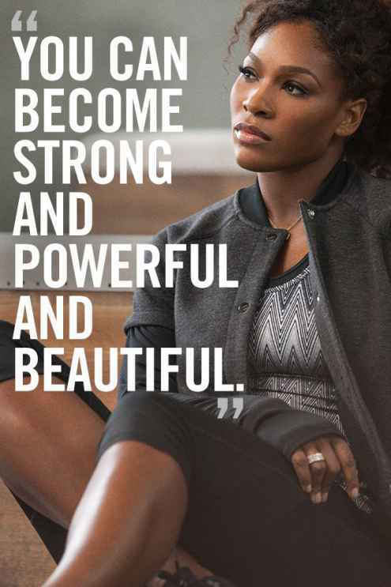
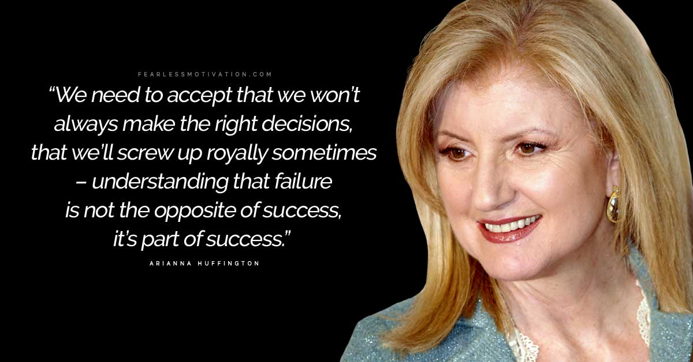

Events
our special day

2 July 2017 Independent day
Women who are financially independent can not only contribute to the everyday expenses of the household, but also help to meet the family's financial goals. To feel responsible and boost morale: Financially independent people are capable of taking their own decisions and don't have to depend on anybody. This increases their self-respect and makes them more confident to face any kind of situations in life.

5 September 2018 Women's Health

23 Augest 2017 Counseling service
Counseling that specializes in women's issues is a specific area of therapy that can help women deal with issues that are exclusive to them, and make a huge positive difference in their lives.